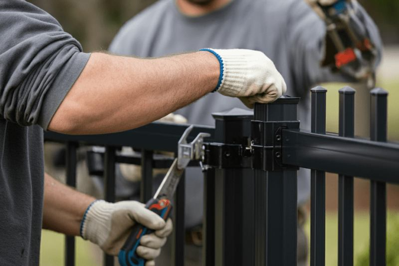
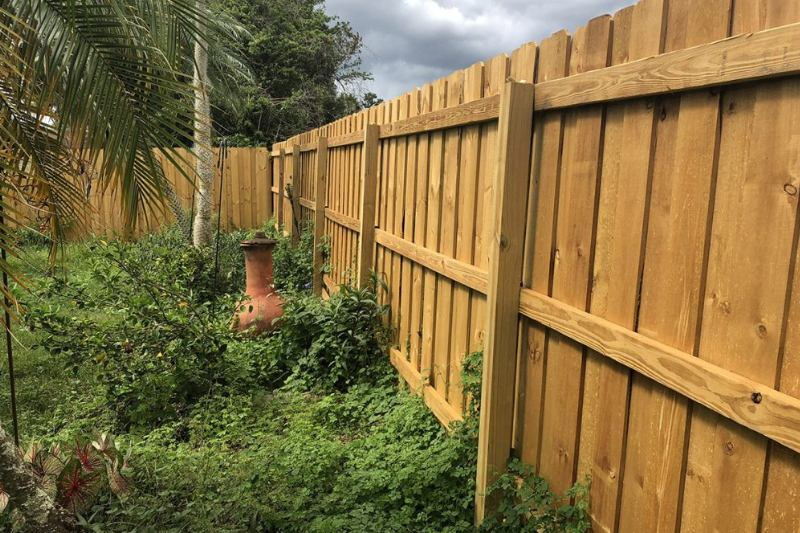

How much failed
One panel is a small ticket. A whole side of loose posts is closer to a new fence.
Fence repair
A lot of fence calls are repairs, not new lines. Wind, a dry ground line, a stretched chain-link run, or a gate that drags. If the posts are still doing their job, we repair the fence. If they are not, we say so.


Repair fits broken boards, a popped vinyl panel, a chain-link run that has lost tension, a metal section that has bent, and gates that sag. Spring wind and a hard monsoon gust are the usual reasons a sound fence suddenly is not.
Replacement is the right call when posts have rotted at the soil, pulled out of the ground, or the line has left its original path. Patching pickets onto dead posts spends the repair money twice. We look at the posts first, then the boards.
Posts, panels, rails, or the gate. One of those is almost always the real problem.
Sound posts can take new material. Moving posts cannot.
Wood, vinyl, chain link, or metal, using material that belongs on that line.
A gate gets hardware that fits the leaf. A loose post gets reset, not another screw.
We do not publish a price list. These are the details that move an estimate.
One panel is a small ticket. A whole side of loose posts is closer to a new fence.
Matching vinyl or a special metal section can cost more than cedar boards.
Resetting posts in caliche takes longer than nailing on pickets.
A side yard with no gate, or a line buried in gravel, takes more time than an open backyard.
It depends on what failed. Replacing a few boards is a small job. Resetting posts or rebuilding a gate is not. We do not quote “fence repair” as one flat fee, because a loose latch and a downed line are not the same visit.
Yes, when the damage is local. A blown-out panel, a leaned gate, or a few snapped rails can be rebuilt in place. If the wind walked the posts out along the run, replacing those posts is the repair. We will not nail boards back onto posts that will fall again.
Yes. Wood pickets and rails, vinyl panels, chain-link fabric and posts, and metal or aluminum sections. The limit is whether parts for that fence still exist and whether the posts are worth keeping.
Not always. A few loose posts can be reset. When most of the posts are rotten, broken, or out of the ground, a new line costs less than pretending the old one can be saved. We will tell you which situation you are in before any work starts.
Yes. Dragging and sagging gates are half of the repair calls. If the fence is sound and the gate is not, we repair the gate and leave the line alone. Gate details are on the gate installation page.